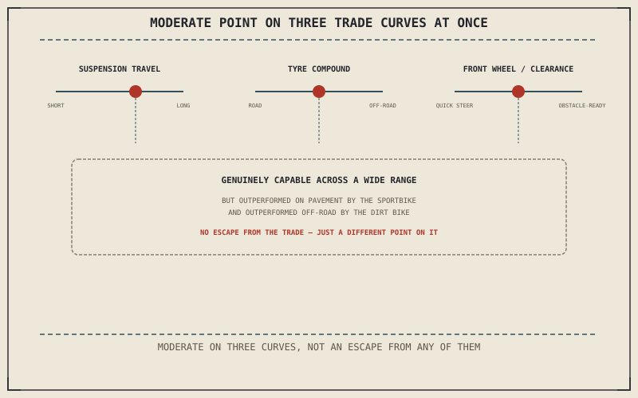

Chapter 14.4 covered distance on a known surface, at speed. Adventure and dual-sport motorcycles tackle a different problem entirely: a surface that isn't known in advance at all, potentially changing from smooth pavement to gravel, mud, or rutted trail within the same ride, with the machine expected to stay competent across that whole range rather than excelling at any single point on it.
Chapter 14.4 closed by pointing to exactly this problem: genuinely uncertain terrain, distinct from either comfort or distance alone. This chapter is that category.
Suspension Travel: The Workspace for Uncertainty
Chapter 5.5 already used an adventure bike as its own leading example of what generous suspension travel actually buys: well over 200 millimetres at each end, the total workspace needed to absorb rocks, ruts, and sudden drops a paved-road machine never has to plan for. Chapter 5.5 was equally clear that this isn't free — that much travel raises seat height and changes geometry as a direct consequence, exactly the trade-off this part has now shown every specialized category paying somewhere.
Dual-Purpose Tyres: A Compromise Made Honest
Chapter 6.6 established tread grooves as rubber deliberately removed from the contact patch, trading dry-pavement grip for the ability to handle water and debris a slick can't survive. Dual-purpose tyres push that same trade further still, sacrificing meaningfully more on-road grip for genuine traction in gravel, mud, and dirt — a visible, honest compromise rather than an attempt to disguise it, since neither extreme of Chapter 6.6's trade curve actually serves a ride crossing both surfaces in the same day.
An adventure bike doesn't escape any of this part's trade curves — generous suspension travel still raises seat height, dual-purpose tyres still give up on-road grip, and a large front wheel still costs some steering quickness. What it does instead is deliberately sit at a moderate point on several curves at once, rather than an extreme on any single one.

A diagram showing an adventure motorcycle positioned at a moderate point on three separate trade curves at once — suspension travel, tyre compound, and front wheel size — rather than at an extreme on any single one.
Ground Clearance and Wheel Size: A Third Trade Curve
Chapter 4.7 established ground clearance and lean angle as set by whatever component hangs lowest, and adventure bikes prioritize that clearance for obstacle clearance over a cruiser's low center of gravity. Many also fit a larger front wheel — commonly 19 or 21 inches — sized specifically to roll over obstacles a smaller wheel would drop into, at a real cost to the quick, urgent steering Chapter 14.2's shorter-trail geometry chases on pavement. This is a third instance of the same pattern: a deliberate position, not an escape from the trade-off entirely.
A Common Misconception, Cleared Up Early
It's a common assumption that an adventure bike is the motorcycle that "does everything," excelling on pavement and off-road alike without the compromises every other category in this part has been shown paying. This chapter has instead shown it paying three of those trade-offs simultaneously, at a moderate rather than extreme point on each — genuinely capable across a wide range of surfaces, but out-performed on pure pavement by Chapter 14.2's sportbike and out-performed off-road by a machine built with no pavement compromise at all.
Where This Leads
Chapter 14.6 turns to dirt bikes next, a category that abandons the moderate compromise this chapter described entirely, committing fully to off-road terrain with no pavement concession at all.
Key Concepts to Remember
- Generous suspension travel provides the workspace to absorb rough terrain, at the cost of a taller seat height and altered geometry.
- Dual-purpose tyres push tread-groove trade-offs further than a road tyre, giving up on-road grip for genuine off-road traction.
- An adventure bike sits at a moderate point on multiple trade curves at once rather than escaping any of them, which is why it's outperformed on either extreme by a more specialized category.
Cross-References
| ← Ch. 5.5 | Used an adventure bike as its leading example of suspension travel as a workspace; this chapter treats that generous travel as this category's defining feature. |
| ← Ch. 6.6 | Established tread grooves as a dry-grip-versus-debris trade; this chapter treats dual-purpose tyres as pushing that same trade further. |
| ← Ch. 4.7 | Established ground clearance as set by whatever component hangs lowest; this chapter treats an adventure bike's clearance and wheel size as prioritizing obstacles over on-road steering. |
| → Ch. 14.6 | Covers dirt bikes, purpose-built for off-road only. |